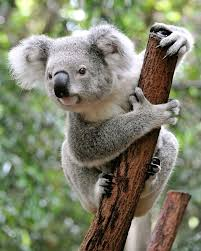

Koala
Koalan är ett trädlevande pungdjur som lever i Australien. Den känns lätt igen på sin grå päls,
stora öron och runda nos. Koalan tillbringar större delen av sitt liv i eukalyptusträd, där den både vilar och hittar sin föda.
Den sover upp till 18-20 timmar om dagen för att spara energi, eftersom eukalyptusbladen den äter innehåller lite näring.
Koalan är beroende av eukalyptusskogar för att överleva,
och därför hotas arten av skogsavverkning, bränder och sjukdomar.
Fakta om Koalor:
🐨 Koalan sover upp till 20 timmar om dagen.
🌿 Den äter nästan bara eukalyptusblad, trots att bladen är giftiga för många andra djur.
👣 Koalans fingeravtryck är så lika människans att de kan förväxlas i brottsutredningar.
👍 Den har två tummar på varje framfot för att klättra bättre i träd.
🎵 Koalor kan låta väldigt högt – nästan som ett grymtande eller brummande ljud, trots sin lilla storlek.
🍼 Ungen, som kallas “joey”, bor i mammans pung i flera månader efter födseln.